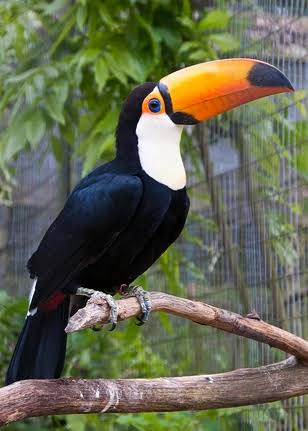

El tucán es un ave tropical de la familia Ramphastidae que habita en las selvas de América, desde México hasta Argentina. • Su pico: Es enorme pero muy ligero y hueco. No sirve como arma defensiva, sino para regular su temperatura corporal y alcanzar frutas en ramas delgadas. • Alimentación: Son principalmente frugívoros (comen frutas), pero también consumen insectos, huevos y pequeños lagartos. • Hábitat: Viven en las copas de los árboles y anidan en los huecos naturales de los troncos. • Comportamiento: Son aves monógamas (tienen una sola pareja de por vida), sociales y viajan en pequeñas bandadas. Ambos padres crían a los polluelos. • Amenaza: Su mayor peligro es la deforestación de las selvas y el tráfico ilegal de fauna.